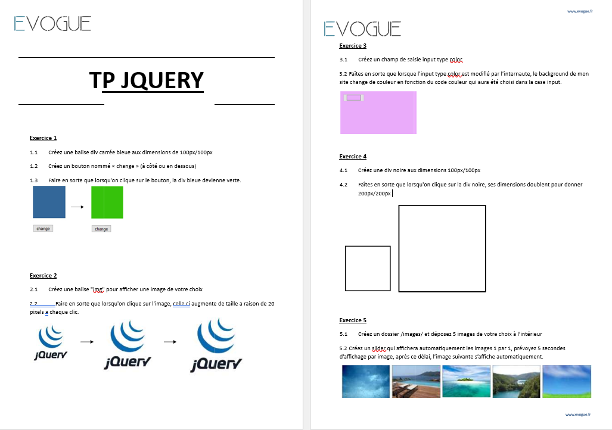
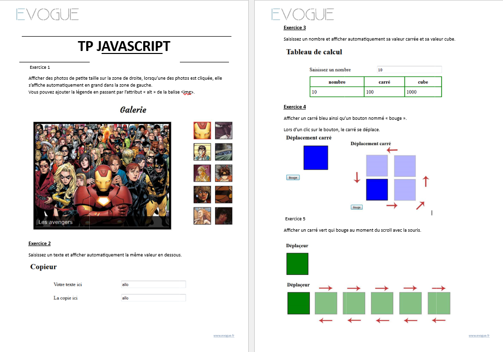

TP 1 : Calculatrice
Réalisez une calculatrice en JavaScript permettant d’effectuer les quatre opérations de base (addition, soustraction, multiplication, division) entre deux nombres, avec une interface simple et un affichage immédiat du résultat.
Voir le TP 1TP 2 : Exercices d’interactions JavaScript
Ce TP propose une série d’exercices pratiques pour manipuler le DOM et les événements en JavaScript : changement de couleur, gestion d’images, sélection de couleurs, animation de formes et création d’un slider interactif. Idéal pour s’entraîner à rendre une page web dynamique et interactive.
 Voir le TP 2TP 3 : Exercices d’interfaces dynamiques JavaScript
Ce TP regroupe plusieurs exercices pratiques pour manipuler le DOM et les événements en JavaScript : galerie d’images interactive, affichage dynamique de texte et de calculs, déplacement d’éléments à l’aide de boutons ou du scroll. Idéal pour s’entraîner à créer des interfaces web réactives et interactives.
 Voir le TP 3